Survival has
an upper limit.
Win too little: you cannot repay. Win too much: the boss takes a cut.
- Starting cash
- 600
- Repayment rounds
- 3
- Hands / check
- 5
SYSTEMS · ECONOMY · BALANCE
A 16-bit casino game in development, exploring risk, debt, and the cost of keeping your fortune.
One bankroll connects every decision.
Win too little: you cannot repay. Win too much: the boss takes a cut.
A repayment round can contain multiple five-hand cycles. Cashing out opens the gallery economy.
Select a numbered node to inspect the rule.
Push returns the stake. Loss forfeits it. Surrender refunds half, rounded down.
At least one affordable offer when possible. Refresh costs 1 chip, once per hand.
Available on an eligible opening hand, once per five-hand cycle.
Utility, income and visibility share one budget.

FUNDS / ONE SHARED CURRENCYDisplayed value lowers the safe cash ceiling. Paid art resells for 70%; the opening gift resells for 0.
Opening gift · resale 0
1 free peek / round
+15 starting suspicion
8 payouts to break even
Rule illustration: +20 per paid peek; no starting suspicion or free peeks. Use arrow keys or drag the gold control.
If the next wealth check passes and you cash out with City Study displayed, its payout is 15 chips.
At 100 suspicion, the run ends: no future cash-out. Below 100, this is conditional income, not a measured survival probability or guaranteed return.
Configuration, algorithms and analysis — clearly separated.
HOVER OR SELECT A ROUND · CHART ⇄ TABLE
| Round | Floor | Base ceiling | Payment |
|---|---|---|---|
| 01 | 700 | 1,250 | 300 |
| 02 | 1,100 | 1,800 | 450 |
| 03 | 1,500 | 2,400 | 650 |
Cash ceiling = base ceiling + surcharge − locked display value. First excess in rounds 1–2 adds 20% of the next base payment to the next round's floor, ceiling and payment.
EV / bet = p(win) + 1.5p(blackjack)
− p(loss) − 0.5p(surrender)Mutually exclusive outcomes; push contributes zero. The probabilities depend on strategy and deck state.
Sensitivity example only: win 40%, blackjack 3%, loss 52%, surrender 2%, push 3%. Assumed return: −8.5%. These are not measured game odds.
The formula approximates continuous stakes. The game uses integer chips; surrender rounds its refund down. Estimate outcome frequencies from recorded runs before presenting a measured return.
// Fisher–Yates · condensed Unity source
for (int i = deck.Count - 1; i > 0; i--) {
int j = Random.Range(0, i + 1);
Swap(deck, i, j);
}Unity's random generator selects each swap. Cheat reveals the next draw; it does not rewrite the deck.
No custom pity system or adaptive probability model is claimed. Map reel animation is separate from card outcomes.
| Sink | Rule | Design role |
|---|---|---|
| Debt | 300 / 450 / 650 | Progression pressure |
| Excess cash | Above cash ceiling | Discourage hoarding |
| Resale | 30% paid-price loss | Cost to reverse |
| Refresh | 1 chip; once / hand | Bound manipulation |
Finite-run balance controls, rather than a live-service inflation forecast.
Clears per 100 attempts when preserving carryover instead of stopping at the minimum.
Simulated attempts across seven strategies. The comparison uses safe peeking without art.
Contextual guidance followed early confusion. Comprehension needs a follow-up playtest.
Historical diagnostic results; not a fresh benchmark or human playtest improvement.
Guaranteed profit → tie payment to delivery.
Competing police and loyalty systems → one currency and a tighter casino loop.
Winning more was always better → introduce a wealth floor and ceiling.
Repayment drained the next round → separate the floor from payment; limit refreshes.
Collecting had no strategic cost → displayed art lowers the cash ceiling.
A visual language built around state and consequence.
Press DEAL to preview feedback. This is a UI study.
Pixel labels + readable body type.
Hard borders + 2px press feedback.
Continue repeats the five-hand cycle. The next repayment round starts after gallery payment and preparation.
Development build · 13 Oct 2026 · Desktop recommended. Systems, balance and presentation are still being refined; the embedded build may differ from the current source.
Test cosmetic frames and gallery themes without changing the core risk rules.
Themed objectives → visible milestones → a cosmetic frame. Measure participation, drop-off and perceived fairness.